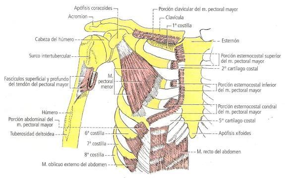
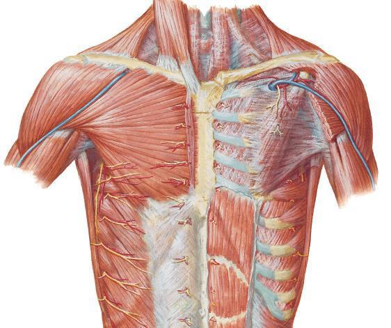
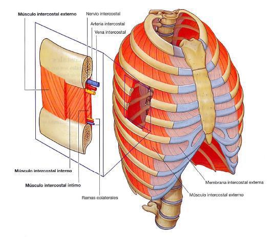
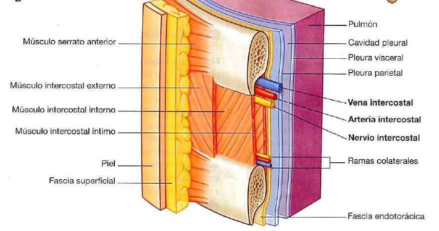
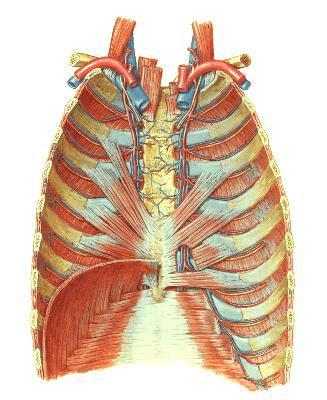

ClinicusMed · Dossiê Clinicus — Padrão de Excelência

| Aspecto | Detalhe |
|---|---|
| Origem | 3 porções: Clavicular (2/3 mediais da borda anterior), Esternocostal (esterno + costelas 1-7), Abdominal (vaina do reto abdominal) |
| Inserção | Lábio lateral do sulco bicipital do úmero, via tendão em forma de U |
| Constituição | Fibras em leque, envolvido por fáscia própria |
| Irrigação | Ramo peitoral da toracoacromial |
| Inervação | Nervo peitoral lateral + alça dos peitorais |
| Ações | Adução do braço, rotação medial do braço, eleva o tronco (escalar) |

| Aspecto | Detalhe |
|---|---|
| Origem | Face lateral e borda superior das costelas 3, 4 e 5 |
| Inserção | Borda medial do processo coracoide |
| Relações | Coberto pelo peitoral maior; forma parede anterior da fossa axilar; espaço clavipeitoral |
| Irrigação | Ramo peitoral da toracoacromial |
| Inervação | Nervo peitoral medial + alça dos peitorais |
| Ações | Porção costal: desce a escápula. Porção escapular: eleva costelas (inspirador) |

Ocupam o espaço intercostocondral, entre as costelas e as cartilagens costais. Em cada espaço existem 3 músculos: externo, interno (médio) e íntimo. Todos inervados pelos nervos intercostais.
| Músculo | Fibras/Extensão | Função |
|---|---|---|
| Intercostal Externo | Oblíquas de cima-baixo e trás-frente. Da articulação costotransversa até a costocondral (NÃO chega ao esterno — a membrana intercostal externa prolonga até lá) | Eleva costelas — INSPIRADOR |
| Intercostal Interno (Médio) | Oblíquas de cima-baixo e frente-trás. Profundo ao externo. Só na parte anterior — da linha axilar média até o esterno | Desce costelas — ESPIRADOR |
| Intercostal Íntimo | Oblíquas pra baixo e trás. Mais profundo — do ângulo costal posterior até perto da articulação condroesternal | ESPIRADOR |

| Aspecto | Detalhe |
|---|---|
| Origem | Esterno — face posterior do corpo e apêndice xifoide |
| Inserção | Face profunda das cartilagens costais 3ª a 6ª |
| Relações | Entre o músculo e a parede torácica passam os vasos torácicos internos |
| Inervação | Nervos intercostais |
| Ação | MÍNIMA — é um músculo EM REGRESSÃO (vestigial) |

| Aspecto | Detalhe |
|---|---|
| Inserção Escapular | Borda medial da face anterior (do ângulo superior ao inferior) |
| Corpo Muscular | 3 grupos: Superior (1ª e 2ª costelas), Médio (C3-C4), Inferior (costelas 5 a 9) |
| Inserção Costal | Digitações na borda inferior e face lateral das costelas 2 a 9 |
| Inervação | Nervo Torácico Longo (nervo respiratório de Charles Bell) — origina-se de C5, C6, C7 |
Ações: porção escapular eleva costelas (inspirador, só na inspiração forçada); porção torácica aplica a escápula contra o tórax, facilita oscilação da escápula na abdução do úmero.
Vamos acompanhar uma paciente que desenvolveu escápula alada após uma mastectomia com esvaziamento axilar. O caso evolui em 3 níveis — clica em cada um pra ver como as coisas vão se desenrolando.
O sistema guarda, no seu navegador, quais cards você já sabe bem e quais precisam voltar mais cedo — cada vez que você avalia um card, ele recalcula quando ele deve voltar.
10 questões, do mais básico ao mais puxado. Escolhe uma alternativa, depois clica em "Ver comentário completo" — vale a pena ler até quando você acerta, porque o comentário explica cada alternativa, não só a certa.
Todas as imagens desse capítulo, reunidas num só lugar pra revisão rápida.